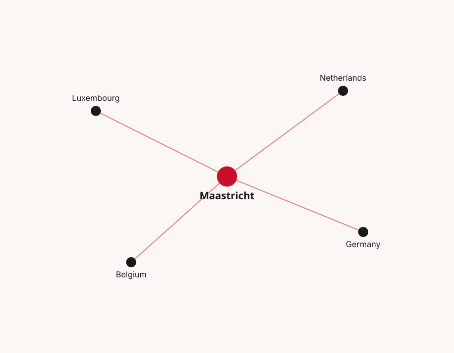

One region, one talent market
Maastricht sits at the literal tri-border point of the Netherlands, Germany, and Belgium, with Luxembourg less than a two-hour drive south. We think that geography should shape how the tech community here works — not just where it happens to be located.

The Meuse-Rhine Euroregion
Maastricht anchors the Dutch corner of the Meuse-Rhine Euroregion, a cross-border area that also includes Aachen (Germany), Liège (Belgium), and reaches toward Luxembourg. Millions of people and a dense cluster of universities, research institutes, and companies sit within an hour's drive of each other — but the region's tech talent has historically organized along national lines instead of around that shared geography.
TechMaastricht is built on the bet that a single, connected community serves the region better than four disconnected ones.
Why cross-border matters
Talent mobility
Developers in Maastricht, Aachen, and Liège are commuting distance from each other — a shared community makes it far easier to find the right role or the right hire, regardless of which side of a border it's on.
Employer access
Companies hiring in one country can tap talent and partnerships across all four, instead of competing for the same small local pool.
Shared events
Hackathons, meetups, and summits rotate across the region, so no single city carries the community alone — and everyone gets a reason to cross a border they'd otherwise never think about.
Are you a community or organization in DE, BE, or LU?
We're actively building partnerships with sister tech communities across the region — let's talk about what we can build together.
Partner With Us